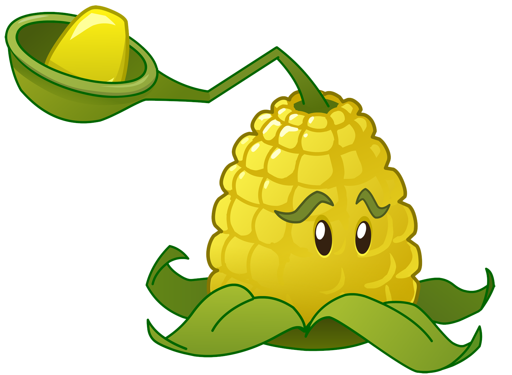

These are the must-have plants if you want to defeat the zombies. These plants come in offensively against the zombies, ranging from straight-ranged shooters, lobbed shooters or multi-lane shooters. They have various unique abilities, all often having a strength that can be used against zombies' weaknesses. They sometimes also have passive\extra abilities that will help deal with the undead better in various situations.
 |
 |
 |
.png) |
||
|
PEASHOOTER Peashooters are your first line of defense. They shoot peas at attacking zombies.Damage: normal Range: straight Recharge: fast Cost: 100 |
POTATO MINE Potato Mines explode on contact, but they take time to arm. Plant them ahead of zombies.Usage: single use, delayed activation Damage: massive Range: contact Recharge: sluggish Cost: 25 |
CABBAGE-PULT Cabbage-pults hurl cabbages at the enemy.Damage: normal Range: lobbed Recharge: fast Cost: 100 |
BLOOMERANG Bloomerangs can hit up to three targets in their lane, twice!Special: can hit up to 3 targets, with two hits each Damage: normal Range: multi-hit Recharge: fast Cost: 175 |
BONK CHOY Bonk Choys rapidly punch nearby enemies that are ahead or behind them.Special: can attack ahead or behind Damage: heavy Range: close Recharge: fast Cost: 150 |
SNOW PEA Snow Peas shoot frozen peas that damage and slow the enemy.Special: chills zombies on impact Damage: normal Range: straight Recharge: fast Cost: 150 |
 |
 |  |
|||
|
REPEATER Repeaters fire two peas at one time.Damage: moderate Damage Details: normal (for each pea) Firing Speed: 2x Range: straight Recharge: fast Cost: 200 |
KERNEL-PULT Kernel-pults fling corn kernels and butter at zombies.Damage: light Damage Details: light (kernel), normal (butter) Special: butter immobilizes zombies Range: lobbed Recharge: fast Cost: 100 |
SNAPDRAGON Snapdragons breathe fire that causes damage in 6 adjacent tiles.Damage: moderate Area: damages all zombies in the 6 tiles in front of it Range: close Recharge: fast Cost: 150 |
SPIKEWEED Spikeweeds destroy one rolling zombie and hurt any zombies that step on them.Damage: normal Area: tile Weakness: crushed by rolling zombies Recharge: fast Cost: 100 |
COCONUT CANNON Coconut Cannons fire down a single lane, causing a medium explosion on impact.Damage: huge Area: 3x3 Usage: tap to fire Range: straight Recharge: slow Cost: 150 |
CHERRY BOMB Cherry Bombs can blow up all zombies in an area. They have a short fuse so plant them near zombies.Damage: massive Area: 3x3 Usage: single use, instant Recharge: slow Cost: 150 |